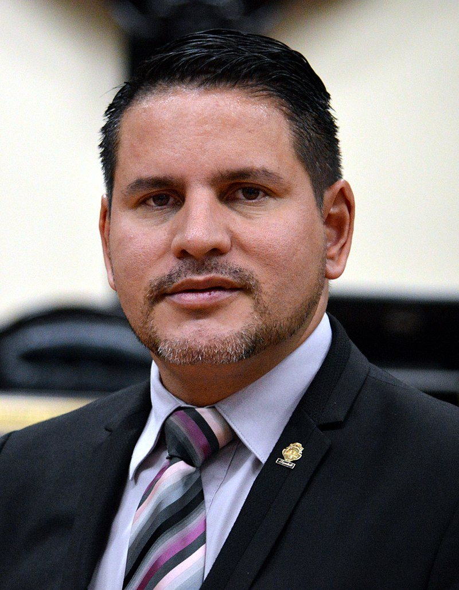
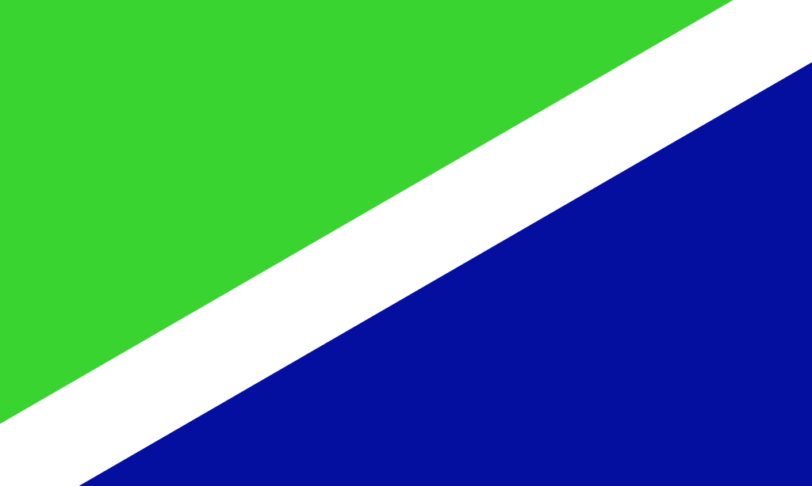
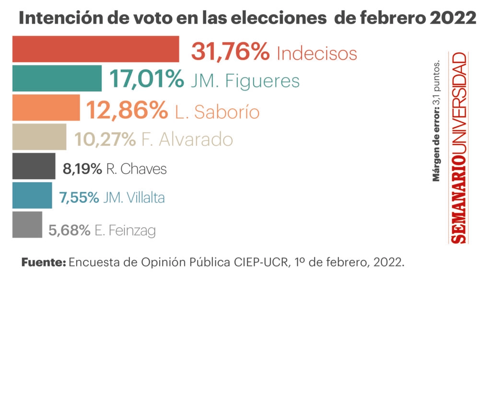
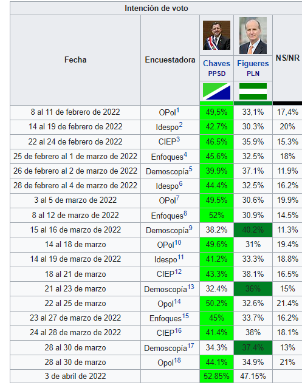
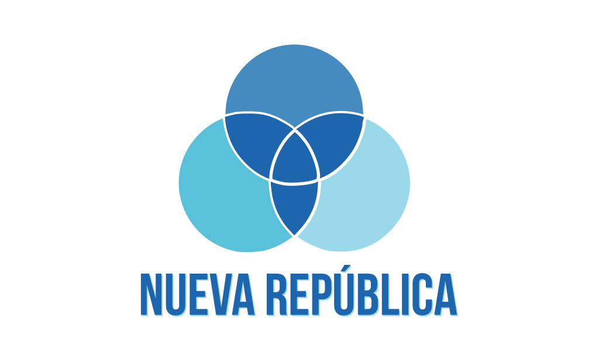
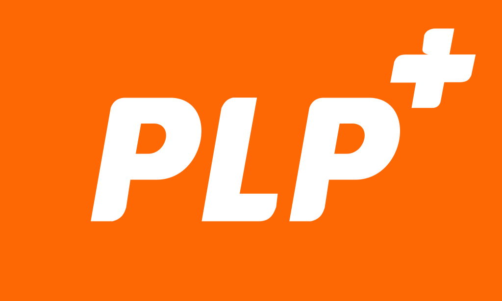

Resumen de las Elecciones Presidenciales del 2022
Las elecciones en Costa Rica se realizaron el 6 de febrero del 2022, con un total de veinticinco partidos políticos inscritos de manera oficial, de esos partidos ninguno alcanzó el 40% de preferencia en la elecciones, que es necesario por ley para ser electo, esto llevo a una segunda ronda, la cual se realizó el 3 de abril del mismo año, en esta ronda quedaron a elección los partidos de Liberación Nacional, liderado por el expresidente José María Figueres Olsen y el partido Progreso Social Democrático liderado por el exministro de economía Rodrigo Chávez Robles, en dicha ronda, resultó vencedor Rodrigo Chávez, tuvo un porcentaje del 53%, frente al 47% de José María Figueres.
Principales Candidatos
| Candidato | Información |
|---|---|
Rodrigo Chávez Robles

|
Información de Rodrigo Chaves Robles |
José María Figueres Olsen

|
Información de José María Figueres Olsen |
| Fabricio Alvarado Muñoz  | Información de Fabricio Alvarado Muñoz |
Eliécer Feinzaig Mintz

|
Información de Eliécer Feinzag |
| Bandera | Nombre Candidato | Encuesta Ronda 1 | Encuesta Ronda 2 |
|---|---|---|---|
|  | Rodrigo Chavez Robles |  |  |
 |
José María Figueres Olsen | ||
|  | Fabricio Alvarado Muñoz | ||
|  | Eliecer Feinzaig Mintz |